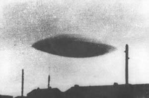

Sybase commercialise un SGBDR
pour le traitement des transactions.
l'IAB crée l'IETF et
l'IRTF. Ces entités purement virtuelles développeront et amélioreront Internet à travers des groupes de travail
publiant des documents sous la forme de Draft, RFC et Standard.
L'USSSC repère un ovni sur son radar.
William Moore et Stanton
T. Friedman sont parvenus à interviewer 92 personnes en relation avec l'incident de Roswell.
à la tombée du jour A Laignes (Côte d'or),
un couple observe depuis son véhicule 1 grosse boule qui descend progressivement et lentement vers l'horizon. De
cette boule couleur orangée s'échappe de la fumée noire. Cette observation dure entre 2 et 3 mn sans que l'objet
ne change de direction GEPAN: PAN
classé C.
Survol d'Uranus par la sonde Voyager 2.
Explosion de la navette Challenger au cours de son 10ème vol.
Lancement par Ariane du satellite français d'observation de la Terre, Spot 1.
Giotto photographie le noyau de la comète de Halley.
A Anet (Eure-et-Loir), 1 voit une sphère projetant
une lumière et se déplaçant lentement, éclairant une surface de 1000 m2. L'observation dure
GEPAN: PAN classé C.
A Heches (Hautes Pyrénées), 1 témoin au volant de
son véhicule observe durant un phénomène de forme sphérique se déplaçant d'est en ouest. Cet
phénomène est de couleur bleue sur sa partie avant et bleu-vert dans la partie qui se rétrécit à l'arrière. Le
témoin estime sa longueur à 100 m Le GEPAN indiquera que cette observation présente toutes les caractéristiques d'une rentrée atmosphériqueGEPAN: PAN classé B.
A Massy (Essonne), un couple observe depuis leur
appartement une boule fixe de couleur rouge et de la grosseur d'un lampadaire sera observée pendant environ GEPAN: PAN
classé C.
Explosion de la centrale de Tchernobyl.
Les radars civils et militaires captent de nombreux ovnis dans les parages
de Saõ Paulo (Brésil) et de Rio de Janeiro (Brésil) -
300 km plus loin sur la côte - ainsi que dans l'état de Goias (Brésil). Des
pilotes s'envolant des aéroports de ces endroits où y atterrissant rapportent avoir vu des ovnis ou les
avoir capté sur leur radar de bord.
Ospires Silva (président de la Compagnie pétrolière gouvernementale de
Petrobas) est sur le point de faire atterrir son avion à Sao José dos Campos (Brésil) lorsque lui et son compagnon voient des lumières
rouges orangées et leur donnent la chasse. Les lumières cessent puis réapparaissent, chaque fois à un nouvel
endroit.
Silva abandonne la traque.
3 chasseurs Northrop F-5E Tiger décollent de la base Air Force de
Santa Cruz, près de Saõ Paulo. L'un d'eux s'approche à moins de 20 km d'un ovni qui change de couleur,
passant du blanc au vert, et fonçant en direction de la mer. Un autre Tiger poursuit lui aussi un
ovni qui varie de coloris, passant du rouge au blanc et du vert au rouge, mais perd de l'allure par manque
de carburant avant de pouvoir s'en approcher. Les 2 ovnis sont à la fois vus au sol et captés par les radars
de bord.
Un chasseur Dassault Mirage 3 est entouré par une douzaine d'ovnis
invisibles, sauf sur radar, avant qu'ils ne s'élèvent au-dessus du chasseur à des allures dont son
incapables les avions conventionnels.
> Burroughs rachète Sperry-Univac pour 4,8 milliards
$. Le nouveau groupe, baptisé Unisys, pèse 10,5 milliards $ et devient n°2 mondial.
1er tir de la fusée japonaise H1.

Photographie le 8 septembre. Selon toute vraissemblance, un nuage lenticulaire.
A Ivry-sur-Seine (Val-de-Marne), un couple observe
pendant 4 mn environ 1 boule très lumineuse de la grosseur d'une boule de pétanque, se déplaçant à la vitesse
d'un avion d'Est en Ouest. Après avoir dégagé des projections rougeâtres, elle disparaît brusquement Le GEPAN indiquera que, malgré la durée d'observation un peu longue, cette observation présente les caractéristiques d'une rentrée
atmosphériqueGEPAN: PAN
classé B.
À Rosny-sous-bois (Seine-Saint Denis), 2 témoins
observent 1 phénomène triangulaire volant très rapidement et sans bruit d'Est en Ouest, à une hauteur estimée à
600 m GEPAN: PAN
classé C.
A Cachan (Val-de-Marne), 1 témoin se promenant dans
la rue observe 1 phénomène volant de forme rectangulaire, dont le devant est arrondi avec un feu blanc et dont
l'arrière se termine en triangle. Sous ce qui lui semble être un engin métallique de couleur grise, le témoin
aperçoit 1 feu rouge et 2 feux verts. Le déplacement est lent, sans bruit et à une altitude de 200 m environ
GEPAN: PAN
classé C.
Par temps clair, le Lago de Cote (Costa Rica) est paisible et lisse comme un miroir.
Joaquin U. A. (propriétaire agricole, 40 ans), et Ronaldo-Alerto L. A. (fermier, 23 ans) voient alors, à 600 m
de distance environ, une rangée de 3 ou 4 cylindres, semblables à des poteaux s'élevant de moins de 1 m (3
pieds) au-dessus du lac. Ils paraissent être fixés à une structure qui reste submergée. S'approchant du lac avec
leur tracteur, ils voient une autre série d'objets se dressant hors de l'eau, toujours élevés d'environ 3 pieds
et écartés de 3 pieds également. Ils peuvent observer clairement et à loisir les cylindres, de couleur sombre
(gris ou brun café). Au bout de de 5 ou 10 mn, les objets disparaissent ensemble en provoquant des remous et des
vagues, toujours comme si les parties émergées appartenaient à une seule structure invisible. 2 semaines plus
tard, ils font à Carlos Vilchez un récit détaillé et lui remettent un dessin de l'événement.
Pour 130 millions $, Bull prend le contrôle à 42,5 % de HIS, la division informatique du groupe Honeywell, celui-là même
qui avait racheté CII en . Bull devient n° 7 mondial.